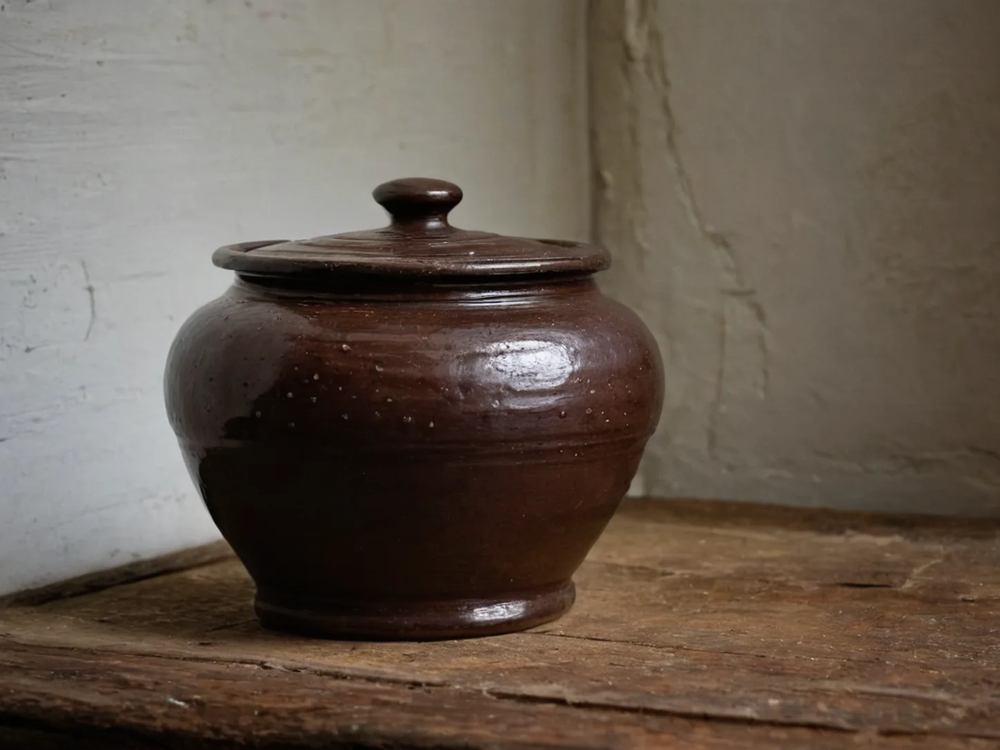

The Clay Pickle Jar in the North-Facing Corner
A clay pickle jar waits in the cool north-facing corner, where an old household object returns to the kitchen as late summer gives way to autumn.

The jar waits in shade
The jar stood where the kitchen received the least sun, close to a wall marked by years of steam and winter damp. Its shoulder was dark brown, its lid broad and slightly uneven, and the water groove around the rim caught a thin line of light. All summer it had seemed too heavy for the room, more stored object than active utensil. A faint salt mark circled the lower body, recalling hands that had lifted it from the shelf each autumn before.
When the mornings cooled, an older aunt wiped the lid with a cloth and set the jar forward again. She did not announce a season or explain a plan. The change was visible in the small movement alone: the jar left its shadowed corner, crossed the shelf, and returned to the part of the kitchen used every day.
A vessel with a season
Pickle jars held different things in different households, and their contents changed with local markets, salt, weather, and the people expected at the table. The earthenware mattered because it was durable enough to wait between those cycles. Its water-sealed rim, stained shelf, and weight in two hands became part of the work before any meal appeared. The jar carried no date, yet its return could be read as a note on the calendar.
The Enamel Washbasin Returned to Its Place follows another object whose usefulness depends on where it is set, while The Rice-Vinegar Bottle Beside the Dining Table notices how one container gains a particular place within reach. The clay jar belongs to that same domestic geography. It is not decoration; it is a piece of kitchen equipment whose season is recognized by being moved.
The corner after supper
In the evening, the lid settled with a low ceramic sound that carried farther than expected in the quiet kitchen. A folded cloth went back beneath the jar, and the shelf beside it was cleared of the small summer things that had collected there. The wall remained cool even after the stove was off.
Nothing about the jar needed to be hurried. Like the bamboo drying tray brought out when clear weather arrives, it kept a household calendar without writing one down. By the time the room was dark, the old corner no longer looked empty; it looked occupied by a task that would unfold at its own pace. Its presence made the shelf ready for the slower kitchen work that followed warmer months.